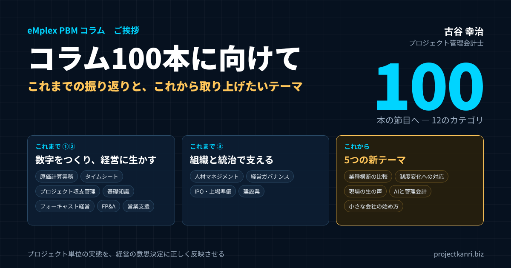

コラム100本に向けて―これまでの振り返りと、これから取り上げたいテーマ

まもなく100本、この節目に立って
このコラムを書き始めた当初は、プロジェクト管理会計という、まだ多くの経営者にとって馴染みの薄い領域を、実務の言葉でどこまで伝えられるだろうかという不安がありました。書き続ける中で記事数は積み重なり、まもなく100本という節目に近づいています。この機会に、これまで取り上げてきたテーマを振り返り、読んでくださっている皆様への感謝を、あらためてお伝えしたいと思います。
振り返ると、このコラムは、私がプロジェクト管理会計のポッドキャストやセミナーで話してきた内容を、文章として残しておきたいという思いから始まりました。話した言葉は、その場では伝わっても、後から読み返すことができません。文章にしておけば、必要な方が、必要なときに、何度でも読み返すことができます。そう考えて書き始めた一本一本が、気づけば、プロジェクト型ビジネスの経営管理を幅広く扱う、一つの体系のようなものになりつつあります。
100本という数字そのものに、特別な意味があるわけではありません。ただ、一つの節目として立ち止まり、これまで何を書いてきたのか、何がまだ書けていないのかを整理しておくことは、これからの執筆のためにも、読んでくださる皆様のためにも、意味のあることだと考えました。本稿は、そのための棚卸しです。初めてこのコラムを訪れた方には、どこから読めばよいかの道案内としても使っていただければ幸いです。
なぜプロジェクト管理会計というテーマにこだわり続けているのか
私自身、朋友建設での新卒時代に会社の経営破綻を経験し、エンプレックスでCFOとして数字と向き合い、ホリプロで新規事業の経営企画に携わってきました。その一つひとつの現場で痛感してきたのは、プロジェクト単位の採算が見えないまま経営判断を続けることの怖さです。この一貫した課題意識が、独立後に200社を超える企業を支援する原動力となり、このコラムを通じて発信を続ける理由にもなっています。
新卒で入った朋友建設では、会社が和議という形で経営の行き詰まりを迎える過程を、内側から経験しました。工事ごとの採算が本当はどうなっているのか、誰も正確には分かっていない。決算の数字は出ていても、その数字がどの現場の、どんな判断から生まれたのかが見えない。その状態で経営を続けることの怖さを、私は社会人の最初の数年で、身をもって知りました。
エンプレックスでCFOを務めたときには、システム開発のプロジェクトごとの予算と実績を、経営の言葉で語れる仕組みづくりに取り組みました。会社の利益は、一つひとつのプロジェクトの利益の合計でしかない。だからこそ、プロジェクトの数字が見えなければ、会社の数字も見えない。この単純な事実を、仕組みとして実現することの難しさと大切さを学びました。
ホリプロでの経営企画の経験は、また別の学びを与えてくれました。映像や音楽、タレントのマネジメントといった、一見すると建設やシステム開発とはまったく違う事業でも、仕事の単位はやはりプロジェクトであり、採算の見え方の課題は驚くほど共通していました。プロジェクト管理会計は、特定の業種のための技術ではなく、プロジェクトで仕事をするすべての会社に共通する経営の基盤なのだと、確信するようになったのです。
このコラムが想定している読者：プロジェクト型ビジネスとは
ここで、このコラムが想定している読者について、あらためて整理しておきます。このコラムは、プロジェクト型ビジネスを営む会社の経営者と、管理部門の皆様に向けて書いています。
プロジェクト型ビジネスとは、顧客ごと、案件ごとに、異なる内容の仕事を、期間を区切って行うビジネスのことです。建設業の工事、システム開発やITサービスの案件、コンサルティングの契約、広告や映像の制作、イベントの企画運営、研究開発の受託。業種はさまざまですが、仕事の単位が一つひとつのプロジェクトであり、プロジェクトごとに売上と原価と利益が生まれるという点で共通しています。
こうしたビジネスでは、会社全体の決算の数字だけを見ていても、経営の実態はつかめません。どのプロジェクトが利益を生み、どのプロジェクトが利益を食いつぶしているのか。そのプロジェクト単位の実態を見える化し、経営の判断に生かすための考え方と仕組みが、プロジェクト管理会計です。このコラムは、その考え方と仕組みを、実務の言葉でお伝えすることを目的にしています。
これまで取り上げてきたテーマの振り返り
これまでのコラムでは、プロジェクト収支管理や原価計算実務といった基本的な会計の仕組みから、フォーキャスト経営、FP&A、経営ガバナンス、IPO準備、そして建設業や人材マネジメントといった業種・組織の観点まで、幅広いテーマを取り上げてきました。一つひとつは独立したテーマですが、根底では「プロジェクト単位の実態を、経営の意思決定に正しく反映させる」という一つの問いにつながっていると感じています。
これまでのコラムは、12のカテゴリに分けて整理しています。それぞれのカテゴリが何を扱っているのか、代表的な記事とあわせて一覧にしました。
| カテゴリ | 扱っているテーマ | 代表的な記事 |
|---|---|---|
| ご挨拶 | 執筆者の紹介、コラムの節目 | コラム執筆者紹介 |
| フォーキャスト経営 | 着地見込みを先に見る経営、シナリオ運用 | バックキャスティングからフォアキャスティングへ／3シナリオ運用 |
| プロジェクト収支管理 | 案件別の採算、損益分岐、粗利率アラート | 採算が実現しない5つの要因／損益分岐点分析 |
| プロジェクト経営管理基礎知識 | 予算管理、権限設計など基本の考え方 | 予算管理の落とし穴／意思決定権限の設計 |
| タイムシート | 工数管理、日報の承認、リモート下の運用 | 稼働率と生産性を同時に上げる工数管理術／リモートワーク下のタイムシート運用 |
| 営業支援 | 名刺起点のCRM、紹介受注の仕組み化 | CRM/SFAを名刺起点で回すメリット／紹介受注を仕組み化する |
| 人材マネジメント | 評価、組織のネットワーク、兼務管理 | 構造的空隙／兼務・マルチアサイン管理 |
| 経営ガバナンス | 取締役会、不正の防止、経営リスク | 不正のトライアングル／取締役会の実効性評価 |
| FP&A・経営管理 | 財務計画と分析、ダッシュボード、ローリングフォーキャスト | FP&A：財務計画と分析の入門／ローリングフォーキャストの実務運用 |
| IPO・上場準備 | 上場準備の全体像、審査、内部統制、資本政策 | IPO準備 三つの階段モデル／監査法人選定と対応実務 |
| 原価計算実務 | 予定賃率、外注費、受注損失引当金、収益認識 | 予定賃率の仕組み／原価計算の導入目的と役割 |
| 建設業 | 実行予算、自己資本、一人親方との取引 | 実行予算の作成と現場管理／一人親方との取引実務 |
こうして並べてみると、このコラムが扱ってきた範囲は、大きく三つの層に分けられることに気づきます。一つ目は、プロジェクト単位の数字をつくる層です。原価計算実務、タイムシート、プロジェクト収支管理、プロジェクト経営管理基礎知識がこれにあたります。予算をつくり、工数と原価を集め、実績と比べる。プロジェクト管理会計の土台となる部分です。
二つ目は、その数字を経営に生かす層です。フォーキャスト経営、FP&A・経営管理、営業支援がこれにあたります。プロジェクトの数字を積み上げて会社の着地を予測し、事業の判断や営業の打ち手につなげる部分です。
三つ目は、仕組みを支える組織と統治の層です。人材マネジメント、経営ガバナンス、IPO・上場準備がこれにあたります。数字の仕組みは、それを運用する人と、それを監督する統治の仕組みがあって、初めて機能します。そして建設業のカテゴリは、私の原点である建設業界に向けて、三つの層を業種に即して語ったものです。
| 層 | カテゴリ | 役割 |
|---|---|---|
| ① 数字をつくる | 原価計算実務・タイムシート・プロジェクト収支管理・基礎知識 | 予算をつくり、工数と原価を集め、実績と比べる |
| ② 経営に生かす | フォーキャスト経営・FP&A・営業支援 | 着地を予測し、事業と営業の判断につなげる |
| ③ 組織と統治で支える | 人材マネジメント・経営ガバナンス・IPO準備 | 仕組みを運用する人と、監督する統治 |
| 業種に即して語る | 建設業 | 三つの層を、建設業界の言葉で |
この三つの層は、どれか一つだけでは成り立ちません。数字をつくる仕組みがなければ、経営に生かすことはできません。経営に生かす意思がなければ、数字をつくる仕組みは形骸化します。組織と統治の支えがなければ、どちらも長続きしません。コラムが幅広いテーマを扱ってきたのは、この三つの層を、行き来しながら語る必要があったからだと、今になって感じています。
振り返って見えた、テーマの偏り
カテゴリごとの記事の数を数えてみると、テーマに偏りがあることにも気づきました。最も多いのは原価計算実務で、次いでFP&A・経営管理、経営ガバナンス、IPO・上場準備が続きます。私自身の経歴が、経理・財務の実務と、上場企業のCFOとしての経験に根ざしていることを考えれば、自然な結果かもしれません。
一方で、フォーキャスト経営、営業支援、プロジェクト経営管理基礎知識の記事は、まだ多くありません。フォーキャスト経営は、私が最も力を入れて体系化してきた考え方であり、eMplex PBMの中心にある思想でもあります。それにもかかわらず、記事の数が少なかったのは、考え方が自分の中で当たり前になりすぎていて、あらためて書く対象として意識していなかったからだと反省しています。
プロジェクト経営管理基礎知識についても同じです。読者の皆様から「基礎から知りたい」という声をいただきながら、基礎の記事が少なかった。専門的な実務の記事を書くことに意識が向きすぎて、入口となる記事が不足していたのです。次の100本に向けては、こうした手薄なカテゴリを意識的に充実させ、初めての方が順を追って学べるような構成にしていきたいと考えています。
また、記事の分量にもばらつきがありました。初期の記事には、要点だけを短くまとめたものが多く、最近の記事は、具体例や図表を交えて詳しく書くものが増えています。どちらにも良さはありますが、実務で使っていただくことを考えると、手順や数値例まで踏み込んだ内容が求められていると感じています。
読者の皆様からの反応で見えてきたこと
コラムを通じていただく質問や反応の中で、特に多いのが「うちの業種にも当てはまる話だった」という声です。当初は建設業やIT開発業を念頭に書いていたテーマが、映像制作やコンサルティングといった、一見異なる業種の方にも共通する課題として受け止めていただけることが多く、プロジェクト型ビジネスに共通する構造的な課題の広さを、発信する側としても再確認させられています。
もう一つ多いのが、「言葉は知っていたが、自社でどう運用すればよいかが分かった」という声です。プロジェクト管理会計、フォーキャスト、工数管理といった言葉自体は、多くの経営者や管理部門の方がご存じです。しかし、それを自社の規模や業種に合わせて、どの順番で、どこまでやればよいのかとなると、具体的な手がかりが少ない。コラムでは、できるだけ「明日から何をするか」が分かるように書くことを心がけてきましたが、その点を評価していただけることは、書き手として何よりの励みになっています。
一方で、「もう少し基礎から知りたい」「用語の説明がほしい」という声もいただいてきました。実務の深い話を書こうとすると、どうしても前提となる知識を省略しがちになります。今後は、基礎的な内容の記事と、実務の深い記事を、うまく行き来できるように、記事同士のつながりをもっと丁寧に作っていきたいと考えています。
業種別に見ると、建設業の記事への反応が特に大きいことも印象に残っています。私の原点が建設業であることもあり、実行予算や自己資本といった、建設業の経営の根幹に関わる記事には、多くの経営者の方から共感の声をいただきました。和議を経験した者として書いた記事が、同じ業界の誰かの経営判断の一助になっているとすれば、これほどありがたいことはありません。
初めての方へ：立場別のおすすめの読み方
100本近い記事があると、どこから読めばよいか迷われる方も多いと思います。そこで、読者の皆様の立場に合わせて、最初に読んでいただきたい記事を選んでみました。
| 立場 | おすすめの記事 |
|---|---|
| 経営者 | プロジェクト別採算が実現しない5つの要因／「終わってから分かる」経営をなくす3つの視点 |
| 経理・管理部門 | プロジェクト原価計算と予定賃率の仕組み／プロジェクト別原価計算の導入目的と役割／工数管理の実務 |
| PM・事業部長 | 小規模チームが陥りやすい予算管理の落とし穴／案件ごとの損益分岐点分析 |
| 上場準備の担当者 | IPO準備 三つの階段モデル／上場準備のための内部統制実務 |
| 建設業の方 | 実行予算の作成と現場管理の重要性／自己資本の重要性と健全経営の指標 |
経営者の方には、まず、採算が見えなくなる原因と、着地を先に見る経営の考え方から読んでいただくことをお勧めします。細かい会計の手順よりも先に、なぜプロジェクト単位で数字を見る必要があるのか、その全体像をつかんでいただくことが大切だからです。
経理や管理部門の方には、原価計算の実務と、工数管理の記事から読んでいただくのがよいと思います。プロジェクト管理会計の仕組みを実際に動かすのは、多くの場合、管理部門の皆様です。予定賃率の考え方や、プロジェクト別原価計算の導入の手順を押さえておけば、社内の仕組みづくりを主導できるようになります。
プロジェクトマネージャーや事業部長の方には、予算管理の落とし穴と、損益分岐の考え方の記事をお勧めします。自分のプロジェクトの数字を、経理任せにせず、自分で読み解けるようになることが、プロジェクトの採算を守る第一歩です。
上場を準備している会社の方には、IPO準備の全体像と、内部統制の記事から読んでいただくとよいでしょう。プロジェクト型ビジネスの上場準備では、案件ごとの原価計算と予実管理の仕組みが、審査の重要な対象になります。早い段階から、その仕組みを整えておくことが、準備を円滑に進める鍵になります。
書き続けて気づいたこと：書くことは、体系を作ること
100本近くを書いてきて、私自身にとって最も大きかったのは、書くことによって、自分の頭の中にあった知識が整理され、体系になっていったことです。
実務の現場では、経験に基づいて判断することがほとんどです。なぜその判断をするのかを、いちいち言葉にすることはありません。しかし、コラムに書くとなると、その判断の理由を、読者に伝わる言葉で説明しなければなりません。説明しようとして初めて、自分が当たり前だと思っていたことの中に、実は整理されていなかった部分があることに気づかされました。
たとえば、プロジェクトコードの粒度の決め方や、コストレートに間接費をどこまで含めるかといった論点は、支援の現場では毎回その場で判断してきたことでした。それを記事に書こうとしたとき、判断の基準を言葉にする必要に迫られ、結果として、支援先にも説明しやすい、一貫した考え方としてまとめることができました。
もう一つの気づきは、テーマ同士のつながりです。原価計算の記事を書いていると、タイムシートの話が必要になる。タイムシートの話を書いていると、人材マネジメントの話につながる。人材マネジメントの話は、経営ガバナンスにつながる。一本一本は独立した記事でも、書き進めるうちに、プロジェクト型ビジネスの経営管理が、どのようにつながり合っているのかが、自分の中でもはっきりしてきました。このコラムは、読者の皆様のためのものであると同時に、私自身の学び直しの場でもあったのです。
書くことで、自分の考えが変わったこともあります。以前は当然だと考えていた手法が、別の業種の事例を書くうちに、必ずしもどの会社にも当てはまるわけではないと気づいたこともありました。書き続けることは、自分の考えを、常に更新し続けることでもあるのだと感じています。
読者の皆様からよくいただく質問
コラムやセミナー、支援の現場でいただく質問には、いくつかの典型があります。その多くは、すでにどこかの記事で触れていますが、あらためて整理しておきます。
一つ目は、「プロジェクト管理会計は、何から始めればよいですか」という質問です。私の答えは、いつも同じです。まずは、すべての売上と原価に、プロジェクトのコードを付けることから始めてください。コードが付いていなければ、どれほど優れた仕組みを用意しても、プロジェクト単位の数字は集まりません。
二つ目は、「工数の入力を、現場に定着させるにはどうすればよいですか」という質問です。入力させることを目的にせず、入力されたデータが、現場にとって役に立つ形で返ってくる仕組みをつくることが大切です。自分の入力した工数が、プロジェクトの採算の判断に使われていると実感できれば、入力の精度は自然と上がっていきます。
三つ目は、「間接費は、プロジェクトに配賦すべきですか」という質問です。これには、正解が一つではありません。配賦すれば会社全体の採算に近い数字が見えますが、プロジェクトの責任者がコントロールできない費用まで含まれます。配賦しなければ、責任者の成果は見やすくなりますが、会社全体では利益が出ていないことに気づきにくくなります。目的に応じて、両方の見方を使い分けることをお勧めしています。
四つ目は、「エクセルで管理を続けるのと、システムを入れるのと、どちらがよいですか」という質問です。規模が小さいうちは、エクセルで十分に始められます。ただし、プロジェクトの数が増え、関わる人が増えるにつれて、エクセルでは、データの形式を揃え、最新の状態を保つことが難しくなります。エクセルで始め、限界が見えた段階でシステムに移る、という順序が、多くの会社にとって現実的だと考えています。
今後取り上げていきたいテーマ①、業種横断の実務比較
これまでは一つの業種やテーマを深く掘る記事が中心でしたが、今後は同じ課題を複数の業種がどう解決しているかを比較する記事にも力を入れていきたいと考えています。例えば損益分岐点管理という同じ考え方が、建設業とITサービス業でどのように異なる形で運用されているかを比較することで、自社の業種では当たり前とされている手法を、他業種の知恵と照らし合わせて見直すきっかけを提供できると考えています。
比較してみたい組み合わせは、ほかにもたくさんあります。たとえば、受注前の見積の作り方を、建設業の積算と、システム開発の工数見積と、広告や映像制作の制作費の見積で比べてみる。あるいは、検収と売上の計上のタイミングを、業種ごとに比べてみる。同じプロジェクト型ビジネスでも、業種によって慣習や言葉が違い、その違いの中に、自社の仕組みを見直すヒントが隠れていると考えています。
業種横断の比較を進めるうえでは、言葉の違いにも注目したいと考えています。建設業でいう実行予算と、システム開発でいうプロジェクト予算は、ほぼ同じものを指していますが、作り方や使われ方には違いがあります。同じものを違う言葉で呼んでいることに気づくだけでも、他業種の知恵を自社に取り入れるハードルは、ぐっと下がるはずです。
今後取り上げていきたいテーマ②、制度変化への実務対応
インボイス制度やフリーランス新法のように、法制度の変化がプロジェクト単位の原価管理や取引実務に影響を与える場面は、今後も増えていくと予想されます。制度そのものの解説にとどまらず、現場の実務担当者が具体的にどう運用を変えるべきかという視点を大切にしながら、こうした制度変化への対応を継続的に取り上げていきたいと考えています。
制度の変化は、一度の対応で終わるものではありません。制度が施行された直後は多くの解説が出ますが、実際に運用してみて初めて分かる課題は、むしろ施行から時間が経ってから表れます。請求書の受け取り方が変わって、月次の締めのどこに負担がかかるようになったのか。外注先との取引の条件を見直して、プロジェクトの原価にどんな影響が出たのか。こうした、施行後の実務の変化を追いかける記事も、書いていきたいと考えています。
あわせて、会計基準の変化にも目を配っていきます。収益認識の会計基準の適用によって、プロジェクトの売上をいつ、どのように計上するかは、管理会計と財務会計の両方に関わる論点になりました。制度会計の変化が、プロジェクトの管理の現場にどんな影響を与えるのか。その橋渡しをすることも、プロジェクト管理会計の専門家としての役割だと考えています。
今後取り上げていきたいテーマ③、経営者・現場責任者の生の声
これまでのコラムは、私自身の実務経験や支援先の事例をもとに構成してきましたが、今後は経営者や現場責任者の方々の生の声を、可能な範囲で織り込んでいきたいと考えています。数字や制度の解説だけでなく、実際にその変化に向き合っている方々の視点を加えることで、より実感の伴う内容にしていきたいという思いがあります。
もちろん、支援先の情報を扱う際には、守秘義務の範囲を守り、会社や個人が特定されないよう十分に配慮します。そのうえで、失敗も含めた率直な経験を、他の会社の参考になる形で共有していただける方がいれば、ぜひお話を伺いたいと考えています。
今後取り上げていきたいテーマ④、AIとプロジェクト管理会計
新たに力を入れたいテーマとして、AIがプロジェクト型ビジネスにもたらす変化があります。システム開発の現場では、AIを活用した開発が急速に広がり、同じ成果物をつくるのに必要な時間が、大きく変わり始めています。これは、人の時間をもとに価格を決め、原価を計算してきたプロジェクト型ビジネスにとって、ビジネスモデルの根本に関わる変化です。
人の時間で価格を決める方式は、これからも続くのか。工数が減ったとき、売上と利益はどう変わるのか。成果に対して価格をつける方式に移るなら、原価計算や予実管理はどう変わるべきなのか。こうした問いに、プロジェクト管理会計の立場から、具体的な考え方を示していきたいと思います。管理会計の仕事そのものも、AIによって、集計や分析の多くが自動化されていくでしょう。そのとき、人が担うべき判断は何なのかも、あわせて考えていきたいテーマです。
同時に、AIの時代になっても変わらないものもあると考えています。顧客と約束した成果を、約束した期間と予算の中で届けること。そのために、予算を立て、実績を確かめ、先を見通して手を打つこと。道具が変わっても、プロジェクト管理会計の根本にある考え方は変わりません。変わるものと変わらないものを見極めながら、これからの時代のプロジェクト管理会計の姿を描いていきたいと思います。
今後取り上げていきたいテーマ⑤、小さな会社の始め方
もう一つ、意識して増やしていきたいのが、規模の小さな会社のための記事です。これまでのコラムは、どうしても一定の規模の会社を念頭に置いた内容が多くなりがちでした。しかし、プロジェクト管理会計が最も必要とされているのは、実は、専任の管理部門を持たない、社員数十人規模の会社かもしれません。
経理の担当者が一人しかいない。プロジェクトマネージャーが営業も兼ねている。システムに大きな投資はできない。そうした会社が、エクセルから始めて、どこまでプロジェクト管理会計を実現できるのか。最小限の手間で、最大の効果を得るには、何から手をつけるべきなのか。小さな会社の現実に即した、具体的な始め方を、これからのコラムで丁寧に取り上げていきたいと考えています。
| テーマ | 内容の例 |
|---|---|
| ① 業種横断の実務比較 | 損益分岐・見積・検収と売上計上を、建設・IT・映像制作などで比較 |
| ② 制度変化への実務対応 | インボイス制度・フリーランス新法などの施行後の実務の変化 |
| ③ 経営者・現場責任者の生の声 | 守秘に配慮しつつ、失敗も含めた率直な経験の共有 |
| ④ AIとプロジェクト管理会計 | 工数で価格を決める方式の変化、管理会計の仕事の変化 |
| ⑤ 小さな会社の始め方 | 専任の管理部門がない会社が、エクセルから始める手順 |
小さな会社の強みは、意思決定の速さです。経営者が数字を見て、その日のうちに手を打つことができます。大きな会社のような精緻な仕組みは必要ありません。必要なのは、毎月同じ形で、プロジェクトの予算と実績を眺める習慣です。その習慣をどうつくるかを、具体的にお伝えしていきます。
200社の支援を通じて変わらず大切にしていること
200社を超える企業を支援してきた中で、業種や規模が異なっても変わらず大切だと感じているのは、経営者自身がプロジェクト単位の実態を「自分の言葉で語れる」状態を作ることです。専門家に丸投げするのではなく、経営者自身が数字の背景にある現場の物語を理解していること。このコラムも、そのための一つの手がかりになれればという思いで書き続けています。
経営者が自分の言葉で語れる状態とは、たとえば、経営会議で「今月はこのプロジェクトの着地が悪化している。原因は追加作業の無償対応で、来月からは変更管理のルールを徹底する」と、数字と原因と打ち手を、自分の言葉で説明できる状態です。数字を読むのは専門家でも、その数字の意味を判断し、決めるのは経営者です。コラムの一本一本は、その判断のための視点を、少しずつ積み上げていただくためのものだと考えています。
もう一つ大切にしているのは、数字を責める道具にしないことです。プロジェクトの数字が悪いとき、担当者を責めても、次のプロジェクトは良くなりません。数字は、仕組みのどこに問題があるのかを教えてくれる道具です。その姿勢を、経営者と現場が共有できたとき、プロジェクト管理会計は本当の力を発揮します。
支援先の経営者から学んだこと
200社を超える支援の中で出会った経営者の方々からは、私自身も多くを学ばせていただきました。ある建設会社の経営者は、和議を経験した私の話を聞いて「うちも同じ轍を踏まないために、今から手を打ちたい」と、実行予算の仕組みを本気で整え始めてくださいました。またあるIT企業の経営者からは、フォーキャスト経営の考え方を取り入れたことで、期中の意思決定のスピードが明らかに変わったという声をいただきました。こうした一つひとつの対話が、このコラムの内容にも形を変えて反映されています。
支援の現場では、私がお伝えしたことよりも、経営者の方々が自ら工夫されたことのほうが、ずっと多くの成果を生んでいるように感じます。仕組みは、導入しただけでは動きません。経営者自身が、その仕組みを使って判断し、社員に語りかけ続けることで、初めて組織に根付いていきます。その姿を間近で見せていただけたことは、私にとって何よりの学びでした。
eMplex PBMというサービスへの思い
このコラムで取り上げてきた考え方の多くは、私たちが提供する「eMplex PBM」というサービスの設計思想そのものにもつながっています。プロジェクト別の予算・実績・見通しをリアルタイムに可視化するという機能は、単なる便利な管理ツールというだけでなく、経営者や現場責任者が「自分の言葉で語れる数字」を手にするための土台であってほしいと考えています。コラムとサービス、両方を通じて、この思いを形にしていきたいと思っています。
コラムで「こうすればよい」と書くことと、それを実際に毎月続けられる仕組みにすることの間には、大きな距離があります。どれほど正しい考え方でも、運用の手間が大きすぎれば、続きません。eMplex PBMは、コラムで書いてきた予算・実績・フォーキャストのサイクルを、現場の負担をできるだけ小さくしながら回し続けるための道具として作ってきました。コラムで考え方を知っていただき、サービスでそれを実践していただく。その両輪で、プロジェクト型ビジネスの経営管理を支えていきたいと考えています。
サービスの改善にも、コラムの読者の皆様からいただく声が生きています。記事を読んだ方から「この考え方を、実際の画面でどう実現するのか」と質問をいただくことがあり、その問いが、新しい機能や画面の改善のきっかけになることも少なくありません。
100本を超えても変わらない書き方
このコラムは、抽象的な理論書ではなく、実際の現場で起きたことをできるだけ具体的に、そして実務家としての一人称の言葉で伝えることを大切にしてきました。100本を超えた後も、この書き方の基本方針は変えずに、時には失敗談も含めて、飾らない実務の言葉で発信を続けていきたいと考えています。
具体的には、三つのことを大切にしています。一つ目は、結論から書くことです。忙しい経営者や管理部門の方が、冒頭を読むだけで要点をつかめるようにしています。二つ目は、理由と具体例を必ず添えることです。結論だけでは、自社に当てはめることができません。なぜそう考えるのか、実際にはどうなるのかを示すことで、読者の皆様が自分の会社に置き換えて考えられるようにしています。三つ目は、明日から始められる一歩を示すことです。読み終わった後に、何か一つでも行動に移していただけることが、このコラムの目標です。
そして、自社のサービスについては、文脈に沿って必要な範囲でご紹介するにとどめ、過度な宣伝はしないことも心がけています。コラムは、eMplex PBMを使っていない方にも役立つ内容であるべきだと考えているからです。考え方そのものは、エクセルでも、他のシステムでも、実践することができます。
これからも変わらないペースで
100本という節目を通過した後も、書くペースやテーマ選びの基本方針は大きく変えず、日々のプロジェクト経営の現場で実際に起きている課題を、実務の言葉で丁寧に届けていくことを大切にしていきたいと思います。時に業種横断的なテーマ、時に制度対応、時に現場の声を交えながら、これからも読んでくださる皆様にとって、少しでも役に立つ内容を届けられるよう努めてまいります。
書くペースについては、量よりも質を優先したいと考えています。一本一本に、明日から使える具体的な手がかりを込めること。それが守れる範囲で、できるだけ多くのテーマを取り上げていきたいと思います。
感謝を込めて
コラムを書き続ける中で、時には一つのテーマを掘り下げるために何度も現場の記憶を掘り返し、当時の失敗や苦労をあらためて言葉にする作業も少なくありませんでした。それでも書き続けられたのは、読んでくださる皆様からの反応や、実際に現場で試してみたという声があったからです。この場をお借りして、あらためて感謝を申し上げます。
コラムを読んでくださった方から、セミナーや研修でお会いしたときに「あの記事を読んで、社内の会議のやり方を変えました」と声をかけていただくことがあります。文章が、会ったこともない誰かの仕事を、少しだけ良い方向に動かしている。その実感が、次の一本を書く原動力になっています。
追記：100本を超えて（2026年10月）
この記事を書いてから一か月ほどで、コラムは100本の節目を越え、現在は118本になりました。本稿で「これから取り上げたい」と書いたテーマのいくつかは、すでに形になり始めています。
AIとプロジェクト管理会計については、「未来のプロジェクト管理会計」という新しいカテゴリを設け、人月モデルが終わりを迎える背景を取り上げました。業種横断の視点では、建設業界の新常識とこれからの働き方や、アクセンチュアの「プロジェクト管理会計部」に学ぶのように、他の業界や他社の仕組みから学ぶ記事にも取り組みました。小さな会社の始め方としては、エクセルで始めるプロジェクト管理会計をまとめています。
また、コラムで書いてきた内容を体系立てて学んでいただく場として、「プロジェクト管理会計研修」もご案内を始めました。書くことで整理してきた体系を、今度は研修という形で、直接お伝えしていきたいと考えています。100本はゴールではなく、通過点です。これからも、変わらない書き方で、新しいテーマに挑戦していきます。
次の100本に向けて
最後に、次の100本に向けて、コラムの進め方について考えていることをお伝えします。
一つ目は、既存の記事の見直しです。初期に書いた記事の中には、分量が少なく、具体例や図表が足りないものがあります。新しい記事を書くことと並行して、過去の記事にも手を入れ、より実務で使いやすい内容に磨き上げていきます。記事ごとの要点のまとめや、図表、よくある質問も、順次追加していく予定です。
二つ目は、記事同士のつながりの強化です。本稿で立場別の読み方をご紹介したように、記事を一本ずつ読むだけでなく、順を追って読むことで体系的に学べるような道筋を、もっと分かりやすく示していきたいと考えています。
三つ目は、文章以外の形での発信です。研修やセミナー、音声での発信など、コラムとは違う形で、同じ考え方をお届けする機会も増やしていきます。文章で読むのが得意な方、耳で聞くのが得意な方、実際に手を動かして学びたい方。それぞれに合った形で、プロジェクト管理会計の考え方に触れていただければと思います。
まとめ
まもなく100本という節目を迎えるにあたり、これまで読み続けてくださった皆様に、あらためて心より感謝申し上げます。プロジェクト単位の実態を経営の意思決定に正しく反映させるという一貫したテーマを大切にしながら、業種横断の比較、制度変化への対応、現場の生の声という新たな視点も加えて、これからもコラムを続けていきます。引き続きお付き合いいただけますと幸いです。
これまでのコラムを読んでくださった方も、本稿で初めて訪れてくださった方も、気になるカテゴリの記事を一本、手に取ってみてください。そして、何か一つでも、明日の仕事に生かせることが見つかれば、書き手としてこれ以上の喜びはありません。
よくある質問（FAQ）
Q. eMplex PBMコラムではどんなテーマを扱っていますか？
A. プロジェクト型ビジネスの経営管理を、12のカテゴリで扱っています。プロジェクト収支管理、原価計算実務、タイムシート、プロジェクト経営管理基礎知識といった数字をつくる領域、フォーキャスト経営、FP&A・経営管理、営業支援といった数字を経営に生かす領域、人材マネジメント、経営ガバナンス、IPO・上場準備といった組織と統治の領域、そして建設業です。
Q. 初めて読む場合、どの記事から読めばよいですか？
A. 経営者の方はプロジェクト別採算が実現しない要因や「終わってから分かる」経営をなくす視点から、経理・管理部門の方は予定賃率や原価計算の導入の記事から、PMの方は予算管理の落とし穴や損益分岐点分析から、上場準備中の方はIPO準備の三つの階段モデルや内部統制の記事から読むことをお勧めします。
Q. コラムの執筆者はどんな人ですか？
A. プロジェクト管理会計士で、株式会社プロジェクト・イノベーション代表の古谷幸治です。朋友建設での新卒時代に和議を経験し、エンプレックス（現SCSK）でCFO、ホリプロで経営企画を務めた後、独立して200社を超える企業の経営管理を支援してきました。
Q. 今後はどんなテーマが取り上げられますか？
A. 業種横断の実務比較、インボイス制度やフリーランス新法などの制度変化への実務対応、経営者・現場責任者の生の声、AIがもたらすプロジェクト型ビジネスの変化、そして管理部門の小さな会社がプロジェクト管理会計を始める方法などを予定しています。